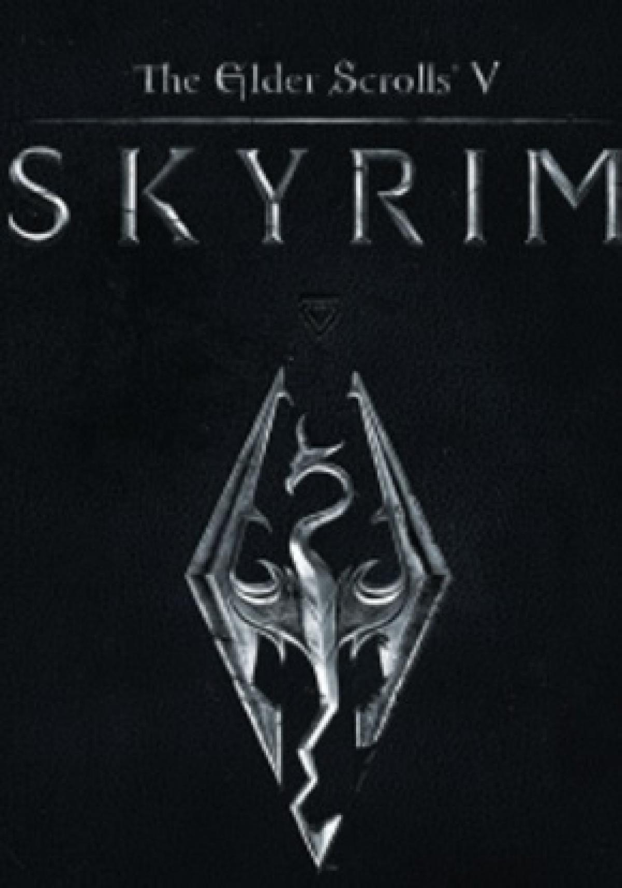

The Elder Scrolls V: Skyrim |
||
|---|---|---|
|  | Sinopsis: La historia principal de Skyrim gira en torno a los esfuerzos del jugador por derrotar al dragón Alduin, quien, según la profecía, devorará el mundo empezando por Sovngarde, el lugar al que van destinadas las almas de los nórdicos honrados y honorables; y posiblemente nada podrá detenerlo. Pero también se menciona que un héroe llamado Dovahkiin, el Sangre de Dragón; derrotará a Alduin de una vez por todas. Continuando 200 años después de los acontecimientos de la anterior entrega de la saga (Oblivion) el juego tiene lugar en las nórdicas tierras de Skyrim, la cual se encuentra en una guerra civil entre la facción de la Legión Imperial y Los Capas de la Tormenta. |
Desarrollador:Bethesda Game Studios Plataformas: Windows,Xbox 360,PlayStation 3,PlayStation 4,Xbox One,Nintendo Switch Año: 2011 Duracion:100 horas aprox Pais:Estados Unidos |
Criticas Profesionales:Álvaro CastellanoLa quinta entrega de The Elder Scrolls regresa para demostrar el poderoso estado de forma de la saga y nos regala la mejor de sus versiones en la de compatibles. El rol se viste de gala para recibir a Skyrim, un título al que sólo algunas deficiencias tecnológicas y de pulido han privado de ser un juego prácticamente redondo, y que muestra fortalezas épicas en aspectos fundamentales como los de jugabilidad, duración o dirección artística. Un lanzamiento sencillamente imprescindible para cualquier fan del rol, y que no debe ser pasado por alto tampoco por el resto de los aficionados. |
Trailer |
Obtener:AlquilarComprar |
Registrate/Iniciar Sesion